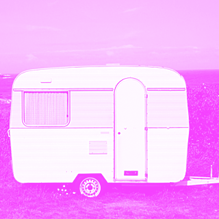

Hei vaan, tsirp.
Tapahtuman verkkosivu on nyt tuotannossa, kuten näkyy. Muutama sana tästä, vaikka periaatteessa toki on toivottavaa, että käyttöliittymä on sen verran intuitiivinen, että ohjelman ja ilmoittautumisen aika nopeasti löytää. Tänne sivuille kootaan uutisia sitä mukaa, kun meillä on jotain tiedotettavaa. Myös ohjelma on tällä hetkellä ihan vain runko ja otsikkotasolla, jotta näette, mitä tapahtumaan on oikein suunnitteilla. Tarkoituksena on myös, että tulevat kävijät voivat aktiivisesti kommentoida jo nyt ja vaikuttaa tapahtumaan. Jos jotain teemaa toivotaan kovasti lisää, pyrimme sen järjestämään. Samoin, jos joku aihe on "jo nähty", emme epäröi poistamasta sitä.
Sivu on vahvasti work in progres, joten käykäähän täällä ahkerasti, sekä seuratkaa meitä twitterissä ja linkedinissä, niin pysytte kehissä tapahtumista ja sivun päivityksistä.
- eka elementti
- toinen
Visuaalisesta ilmeestä
"Siis toi kirahvi on tossa muutamasta syystä. Ensinnäkin, kirahvit on kivoja. Vaeltelee tuolla savanneilla ihan minding their own business ja ovat hauskoja. Sitten toisaalta Helsingin yliopistollahan on toi kirahvikorttelit tuolla päärakennuksen hoodeilla, että siitäkin syystä kirahvi valikoitui tunnuseläimeksi. " - kertoo tapahtuman tuottaja Anne-Mari Seppola.
Visuaalisesta ilmeestä tapahtumassa vastaa ihanan Grass Business Oy:n Risto Vauras. Toimeksiantona oli jotain iloista, jotain kreisiä, ravistelevaa ja ei-virastomaista. Sitä myös saatiin! IT on iloinen asia ja IT-päivät varsinkin ovat iloinen ja kiinnostava verkostoitumismahdollisuus, tätä myös visuaalisen ilmeen on ilmentävän.
Tekniikasta
Kun nyt IT-konferenssista on kyse, lukijaa saattaa kiinnostaa myös toteutusteknologia.Sivuston on teknisesti toteuttanut tämän tapahtuman tuottaja ja HY:n tietotekniikkakeskuksen tietojärjestelmäprojektipäällikkö Anne-Mari Seppola. "No, mä lähdin duunaa ihan staatista html:ää -- siis jotenkin noi cms:t on musta tälleesti vaan turhan järeitä ja bloated ihan vaan yhden ihmisen ylläpitämälle tapahtumasivulle, jaksa sitä lamp-stackia nyt enää väsäillä muutaman uutisen ja logon takia." "En henk.koht kauheesti perusta noista bootstrapeista ja muista, jotenkin mulle css on pyhä, css on kaunis ja css:n pitää olla selkeää, eikä yhden tapahtuman nettisaitti nyt ole niin ihmeellinen, ettäkö sen css:ää ei normiälyllä varustettu DI pysty duunaamaan. "...Vaikka, myönnettävä on, kyllä mä seuraavaan sivuun otan sassii varmaa kehiin, menihän toi vähän silleen sekavaks loppuvaiheissa", Seppola myöntää. "Sivussa on toki templatoitu usein toistuvat pohjat, että esmes footteria ja headeria ei tarvitse copy pasteta. Etsiskelin hetken ja pohdiskelin Jekyllin ja Docpadin välillä. Jälkimmäinen voitti, sillä siinä on coffee scriptiin perustuvat eco-templatit käytössä ja toisekseen se pyörii node.js:n päällä.", Seppola tilittää. Docpad on open sourcea ja ladattavissa osoitteesta docpad.org. Yhteisö on aktiivisesti kirjoittanut plugineita mm. kommentoinnille ja alkuun pääsee esmes html5 boilerplate skeletonin lataamalla.
Sivun koodit on saatavilla pian HY:n github-repoista!
Lisätietoa: Anne-Mari Seppola, info@it2014.fi